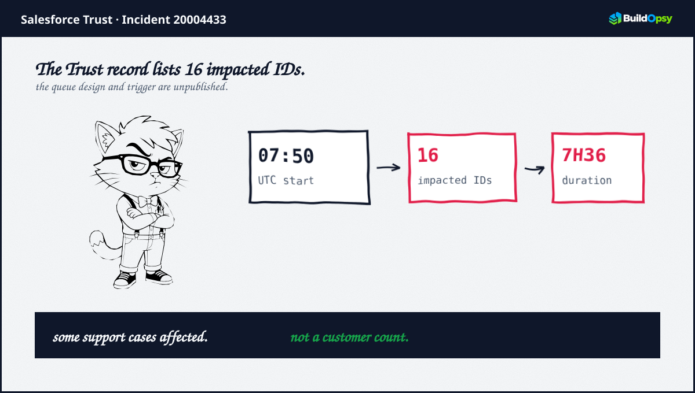
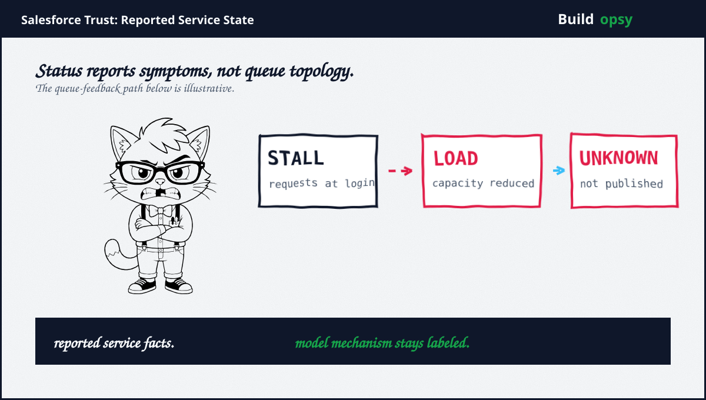

1. The public timeline
The Salesforce Trust record lists the disruption from 07:50 to 15:26 UTC on September 16, a total of 7 hours 36 minutes. Its first public update was posted at 2:02 pm IST; that is the notice time, not the service-start time. At 2:40 pm IST, Salesforce reported requests waiting on an internal login service and using available server resources. At 3:48 pm IST, it said increased load on a core component had limited request capacity. It validated a fix on a test instance at 4:26 pm IST and began fleetwide rollout at 4:49 pm IST. Those updates describe symptoms and mitigation, not the technical trigger that caused the load.
The final impacted-instance list contains 16 IDs. Salesforce later said sandbox instances were not affected and removed them from the list. The record does not give a final count of customer organizations or countries. Its updates describe severe delays, intermittent errors, some services customers could not access, and difficulty creating support cases for some customers.
2. The Queue Mechanics
The status updates establish that requests stalled while waiting on an internal login service and that the waits used server resources. A separate update says increased load on a core component reduced its ability to process requests. These statements do not disclose the request queue implementation. A queueing model can explain why waits matter, but it is not a reconstruction of Salesforce's system.
For a stable queue, Little's law relates the average number of requests in the system (L) to arrival rate (λ) and average time in the system (W): L = λW. Salesforce published none of those measurements, nor queue limits, concurrency or per-instance resource counts, so the public record cannot support a backlog calculation. It also does not establish that one tenant caused the load or that all 16 instances shared the same internal queue.
For a company-specific cost estimate, the relevant inputs would include the affected service hours, impacted workloads, contractual exposure and any lost transactions. Salesforce has not published a loss figure, so this teardown does not estimate one. The downtime calculator can model a reader's own scenario from stated inputs.

3. The Blast Radius, Including Support
Salesforce's status updates say some customers could not create support cases during the incident, while its public updates continued. The record does not say that all support channels or every customer's ticket creation were unavailable.
4. Design Questions Raised by the Incident
Was authentication isolated from other request paths? Salesforce confirmed requests stalled while waiting for an internal login service and consumed server resources. It has not published tenant-pool design or whether bulkheads existed. Isolation is a question for the final RCA, not an established omission.
How were waiting requests bounded? Public updates describe stalled requests but do not give queue limits, timeout settings, or circuit-breaker behavior. Bounded waits and fail-fast responses are controls to evaluate; this report cannot confirm whether they were absent.
Support-case creation was affected too. Salesforce said some customers could not submit support cases during the incident. The dependency topology is not public. An independent intake path is a resilience option, not a confirmed missing component.
What can be learned about load shedding? The status updates do not describe the exact mitigation mechanism. Static priority tiers and automatic shedding under queue pressure are design options for shared-service incidents; whether Salesforce had these controls is unknown.
5. What Should Happen Instead
First, consider bulkheads for tenant cohorts and traffic classes. Interactive logins, API tokens and internal calls can use separate pools with separate ceilings. That limits how much one class can consume.
Second, define queue-wait budgets. Cap waiting time by request class, then shed load with explicit errors and retry guidance. Timeouts are part of capacity control, not just tuning knobs.
Third, island-mode the support plane. Case intake must survive core distress on independent storage with async replay. Test it by failing the core in staging quarterly. The drill that never runs is the drill that fails on conference day.
Fourth, autoscale the chokepoint on queue depth, not CPU. Login services saturate on waits long before they saturate on compute. Queue length is the scaling signal. CPU graphs will report calm seas while the harbor fills.
Fifth, rehearse expected event-day load. Use the forecast to set headroom and deployment controls, then verify those controls under a representative test.
6. The Verdict
Salesforce posted regular updates, identified stalled login requests as part of the failure chain, and reported a validated fix rollout. It has not published its queue configuration, so we cannot say whether specific bulkheads or breakers were missing. Measure shared-dependency queueing and verify isolation in your own architecture.
The lesson travels to every multitenant system with a shared front door. A related consumer-group example is the explicitly modeled Kafka rebalance cascade; its pause is an input, not a report of a customer outage. For your own shared services, measure queue depth under normal load, then test how bounded waits and independent support paths behave when the dependency slows.
Sixteen instance IDs are listed. The login queue design remains undisclosed.
Sources and Method
This analysis follows Salesforce Trust incident 20004433 and its dated update history from September 16–17, 2026. The published timestamps and impacted-ID list are reported facts; Little's law is an explanatory model, not a reconstruction of Salesforce's queue. The status page says the technical trigger and underlying cause would be investigated; it does not publish a final root-cause report.